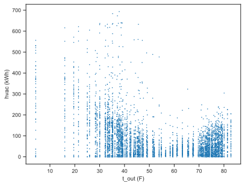
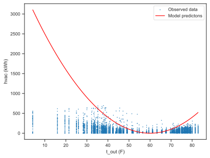
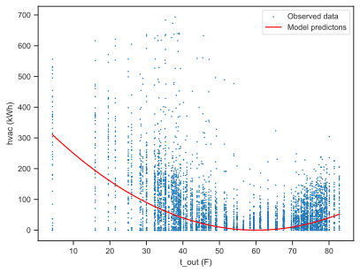
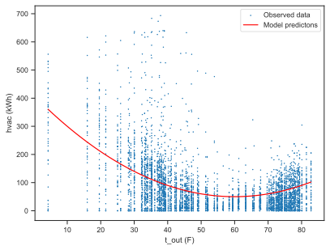
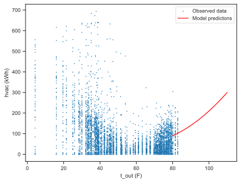

Models are functions#
Let’s now make our first model.
A model is always some kind of function.
It takes some input variables an it maps them to an output quantity of interest.
A good model is one in which the input variables are the causes of the output quantity of interest.
Let’s make our first model for the temperature_raw.xlsx dataset of Homework 3.
Download, and load the data:
% Total % Received % Xferd Average Speed Time Time Time Current
Dload Upload Total Spent Left Speed
100 277k 100 277k 0 0 2217k 0 --:--:-- --:--:-- --:--:-- 2223k
| household | date | score | t_out | t_unit | hvac | |
|---|---|---|---|---|---|---|
| 0 | a1 | 2018-01-07 | 100.0 | 4.28 | 66.69 | 246.47 |
| 1 | a10 | 2018-01-07 | 100.0 | 4.28 | 66.36 | 5.49 |
| 2 | a11 | 2018-01-07 | 58.0 | 4.28 | 71.55 | 402.09 |
| 3 | a12 | 2018-01-07 | 64.0 | 4.28 | 73.43 | 211.69 |
| 4 | a13 | 2018-01-07 | 100.0 | 4.28 | 63.92 | 0.85 |
The output we want to look at is hvac, the weekly energy consumption of a unit.
What affects the weekly energy consumption?
Well, obviously the average external temperature t_out.
Let’s do the scatter plot of the two variables to see what kind of relationship we have:
fig, ax = make_full_width_fig()
ax.scatter(df['t_out'], df['hvac'], s=0.5)
ax.set_xlabel('t_out (F)')
ax.set_ylabel('hvac (kWh)')
save_for_book(fig, 'ch5.fig4')

Okay, it’s kind of a mess, but we see four important trends:
The energy consumption goes up when the average external temperature gets very cold. This makes sense because for very cold external temperatures the occupants are running their heating.
The energy consuption is at a minimum when the external temperature is around 60 degrees F. This also makes sense. When the weather is nice, the occupants shut down their heating.
Then, the energy consumption also goes up when the external temperature becomes higher. This is because the occupants start using their cooling.
Finally, when the average external temperature is around 60 degrees F, the energy consumption is at a minimum, but it does not become exactly zero.
In summary:
hvac\(\downarrow\) ift_out\(< 60\) deg F.hvac\(\uparrow\) ift_out\(> 60\) deg F.When
t_outis 60, there is a minimal, nonzero averagehvac.
What is the simplest function that captures these trends? Well, that would be a parabola centered at 60 degrees F. This one:
for some parameters \(a\) and \(b\) that we need to pick. This is our first model! This is a function. Let’s implement the function in Python:
def hvac_model(t_out, a, b, t_out_min=60):
"""A naive model of weekly HVAC energy consumption (kWh) as a function of external temperature t_out.
The mathematical form of the model is:
hvac = a * (t_out - t_out_min)^2 + b
Arguments:
t_out - The average external temperature in degrees F (average over a week).
a - A parameter to be calibrated using observed data. In units of kWh / (deg F)^2.
b - Another parameter to be calibrated using observed data. This is in units of kWh.
It is the energy consumption when the HVAC system is not used.
t_out_min - The external temperature above which the occupants feel comfortable without using
their HVAC system.
Returns: The weekly HVAC energy consumption in kWh.
"""
return a * (t_out - t_out_min) ** 2 + b
Now we have to calibrate the parameters.
Calibrating our first model manually#
Let’s try to manually pick this parameter \(a\). We are going to do this:
pick a value for \(a\)
plot the scatter plot of
t_outandhvacplot the model
hvac(t_out)compare the results
Here we go:
import numpy as np
a = 1 # in kWh / F^2
b = 0 # in kWh
fig, ax = plt.subplots()
# First the scatter plot of all the data we have
ax.scatter(df['t_out'], df['hvac'], label='Observed data', s=0.5)
ax.set_xlabel('t_out (F)')
ax.set_ylabel('hvac (kWh)')
# Now pick some temperatures to use our model on:
t_outs = np.linspace(df['t_out'].min(), df['t_out'].max(), 100)
predicted_hvac = hvac_model(t_outs, a, b)
ax.plot(t_outs, predicted_hvac, 'r', label='Model predictons')
plt.legend(loc='best');

This is not every good. Maybe my \(a\) parameter is too big. Let me try something smaller.
a = 0.1 # in kWh / F^2
b = 0 # in kWh
fig, ax = plt.subplots()
# First the scatter plot of all the data we have
ax.scatter(df['t_out'], df['hvac'], label='Observed data', s=0.5)
ax.set_xlabel('t_out (F)')
ax.set_ylabel('hvac (kWh)')
# Now pick some temperatures to use our model on:
t_outs = np.linspace(df['t_out'].min(), df['t_out'].max(), 100)
predicted_hvac = hvac_model(t_outs, a, b)
ax.plot(t_outs, predicted_hvac, 'r', label='Model predictons')
plt.legend(loc='best');

This looks better. But I would like to push the model up a little bit. I can do this by varying the \(b\):
a = 0.1 # in kWh / F^2
b = 50 # in kWh
fig, ax = make_full_width_fig()
# First the scatter plot of all the data we have
ax.scatter(df['t_out'], df['hvac'], label='Observed data', s=0.5)
ax.set_xlabel('t_out (F)')
ax.set_ylabel('hvac (kWh)')
# Now pick some temperatures to use our model on:
t_outs = np.linspace(df['t_out'].min(), df['t_out'].max(), 100)
predicted_hvac = hvac_model(t_outs, a, b)
ax.plot(t_outs, predicted_hvac, 'r', label='Model predictons')
plt.legend(loc='best')
save_for_book(fig, 'ch5.fig5')

For manual parameter calibration, this looks pretty good!
In the technical jargon, we have made a regression model. In particular, we have made a linear regression model. The correct way to calibrate the parameters of a linear regression model is via the so-called least squares method. We will learn the mathematics of least squares in a Lecture 13: Fitting models with the principle of maximum likelihood.
Making predictions with our model#
Let’s make some predictions with our model. Let’s look at high temperatures which are missing form our dataset. Say from 80 deg. F to 110 deg. F, what weekly average HVAC energy consumption should we expect?
fig, ax = make_full_width_fig()
ax.scatter(df['t_out'], df['hvac'], label='Observed data', s=0.5)
t_outs = np.linspace(80, 110, 100)
predicted_hvac = hvac_model(t_outs, a, b)
ax.plot(t_outs, predicted_hvac, 'r', label='Model predictons')
ax.set_xlabel('t_out (F)')
ax.set_ylabel('hvac (kWh)')
plt.legend(loc='best')
save_for_book(fig, 'ch5.fig6')

Note that even though the prediction is unlikely to be correct, it can still be very useful. For example, you can use it to plan how much electricity load you are likely to need in an extreme heat event.
Questions#
For simple models like the one above, you can use Python’s interactive plotting capabilities to make an even better manual choice of the parameters. I am not going to explain how the code below works, but if you feel like digging deeper on your own time, then be my guest!
Play with the interactive plot above and see if you can find a better set of parameters. You need to run this Jupyter notebook on Google Colab of course.